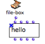

Designing an Iterative Process with the File-Box
All the common OMloop tools – iterators, accumulators – can be used in the File-Box to design iterative file read/write processes.
Getting Results : Finally
Just like in an OMLoop, the Finally box allows to return something as a result of the iteration.
 | Pathnames can be returned at the end of a process, which is quite convenient when writing a file.
|
The file can be accessed and used in a program. Here, the file pathname allows to load and visualize the written file in a TextFile object. |  Visualizing the resulting text in a textfile box – above – and in the textfile editor – below. |
InitDo : Performing Initial Operations
The InitDo box is called internally, just after the filestream has been initialized, and before the iteration starts.
It allows to perform initial operations, such as writing a "file header", as in this example.

Here, an Initdo module has been added to the program, so that a text header is added before the strings.
 | The data printed by InitDo is visible in the text file. |
Eachtime : Repeating an Operation
Eachtime allows to execute an operation at each step of the loop. can be used for writing data in the file at each step of the loop.
|  |
The text file can be visualized in a textfile box. |  |
File-Box inputs
The content of the file and other parameters – the file pathname for instance – can be set in higher-level programs and abstracted as inputs of the File-Box.
Inputs are added or removed like in OMLoop boxes : press alt + → or ←.
Here, File-Box writes a text file that contains ten lines with "hello". The internal program of FileBox allows to add a header to the text, and a number to each line. |  |

On the left, the " pathname" input box returns a pathname to Finally and streamfile.
The pathname is returned to file-write-line functions.
The first file-write-line returns a header to Initdo, which executes the operation before the iteration starts.
The second file-write-line writes the content of the text file with the boxes located on the right.
The " list" input returns a list with ten "hellos".
Listloop enumerates each item of the list. At each step, count gets "true" and returns the number of the step.
String+ concatenates this number, ":" and "hello".
Eachtime writes a line containing the resulting string in the text at each step of the loop.

The pathname returned by Finally can possibly be displayed in a text-view .
The content of the text displayed in the textfile box shows :
- the header printed by Initdo
- the lines printed by Eachtime.